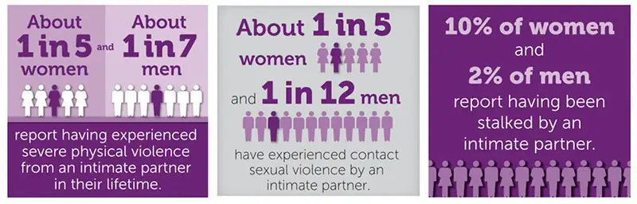

Chapter 14: Relationships, Marriage, and Family¶
Introduction¶
Elena and Cam met through friends when they were in their early twenties. Elena had been out of college for two years and worked in the city procurement office; she took graduate classes in operations management, but she’d need a few more years to finish her Master’s. Cam had received extensive computing training while in the Navy, and was a database architect at an insurance company.
In their first few years of dating, the idea of marriage came up mostly through other people. Friends’ weddings seemed like monthly events, and “who’s next?” small talk was unavoidable. Elena’s grandmother and aunts added to the chorus; they talked about their home country, where women were married with a couple of children by the time they reached Elena’s age. (Elena often pointed out that they were wrong, and the average age of marriage had been climbing for decades.) These pressures were pretty minor at first. They came in the form of jokes, wedding dress texts, and the occasional insult about Cam’s salary. But every once in a while someone would sit Elena down for a serious talk, or corner Cam while he was at a family gathering.
Most of Elena’s family predicted that things would change when she earned her graduate degree and could “focus on her family.” Things did change; Elena became compliance officer for the office of city services, resulting in almost a ten percent increase in her salary. Cam became a supervisor three months later. They moved out of their apartment, which was in Cam’s mother’s garage, and into their own place downtown. They were happy. They were committed to each other. They didn’t get married.
Five years later, Elena and Cam were still living downtown, but they’d traded their rental for a condo. Aside from work, they co-founded a nonprofit where Elena taught financial literacy and Cam ran computing boot camps for recent immigrants and refugees. Maybe it was the hundreds of children they met through the organization, or maybe it was seeing their friends’ kids, or maybe it was being in her thirties, but Elena realized she wanted to be a mother. They started the adoption process, and eighteen months later welcomed a young girl who had been born in another country.
When did Elena and Cam become a family? Was it when they moved in together? When they adopted the child? Does their not being married matter?
14.1 What Is Marriage? What Is a Family?¶
Learning Objectives
By the end of this section, you should be able to:
- Describe society’s current understanding of family
- Recognize changes in marriage and family patterns
- Differentiate between lines of descent and residence
Marriage and family are key structures in many societies. Many of us learn from a young age that finding and joining the right person is a key to happiness and security. We’re told that children need two parents. Many of the tax laws, medical laws, retirement benefit laws, and banking and loan processes seem to favor or assume marriage. Should those assumptions be changed? Is marriage still the foundation of the family and our society?
In 1960, 66 percent of households in America were headed by a married couple. That meant that most children grew up in such households, as did their friends and extended families. Marriage could certainly be seen as the foundation of the culture. By 2010, that number of households headed by married couples had dropped to 45 percent (Luscombe 2014). The approximately 20 percent drop is more than just a statistic; it has significant practical effects. It means that nearly every child in most parts of America is either in or is close to a family that is not headed by a married couple. It means that teachers and counselors and even people who meet children in a restaurant can’t assume they live with two married parents. Some view this decline as a problem with outcomes related to values, crime, financial strength, and mental health. Sociologists may study that viewpoint to determine if it is actually true.
What is marriage? Not even sociologists are able to agree on a single meaning. For our purposes, we’ll define marriage as a legally recognized social contract between two people, traditionally based on a sexual relationship and implying a permanence of the union. In practicing cultural relativism, we should also consider variations, such as whether a legal union is required, whether more than two people can be involved, or whether the marriage is a religious one or a civil one.
Sociologists are interested in the relationship between the institution of marriage and the institution of family because, historically, marriages are what create a family, and families are the most basic social unit upon which society is built. Both marriage and family create status roles that are sanctioned by society.
The question of what constitutes a family may be an even more difficult one to answer; it’s a prime area of debate in family sociology, as well as in politics and religion. Social conservatives tend to define the family in terms of structure with each family member filling a certain role (like father, mother, or child). Sociologists, on the other hand, tend to define family more in terms of the manner in which members relate to one another than on a strict configuration of status roles. Here, we’ll define family as a socially recognized group (usually joined by blood, marriage, cohabitation, or adoption) that forms an emotional connection and serves as an economic unit of society. Sociologists identify different types of families based on how one enters into them. A family of orientation refers to the family into which a person is born. A family of procreation describes one that is formed through marriage. These distinctions have cultural significance related to issues of lineage.
Drawing on two sociological paradigms, the sociological understanding of what constitutes a family can be explained by symbolic interactionism as well as functionalism. These two theories indicate that families are groups in which participants view themselves as family members and act accordingly. In other words, families are groups in which people come together to form a strong primary group connection and maintain emotional ties to one another over a long period of time. Such families may include groups of close friends or teammates. In addition, the functionalist perspective views families as groups that perform vital roles for society—both internally (for the family itself) and externally (for society as a whole). Families provide for one another’s physical, emotional, and social well-being. Parents care for and socialize children. Later in life, adult children often care for elderly parents. While interactionism helps us understand the subjective experience of belonging to a “family,” functionalism illuminates the many purposes of families and their roles in the maintenance of a balanced society (Parsons and Bales 1956). We will go into more detail about how these theories apply to family in the following pages.
Challenges Families Face¶
People in the United States as a whole are somewhat divided when it comes to determining what does and what does not constitute a family. In a 2010 survey conducted by professors at the University of Indiana, nearly all participants (99.8 percent) agreed that a husband, wife, and children constitute a family. Ninety-two percent stated that a husband and a wife without children still constitute a family. The numbers drop for less traditional structures: unmarried couples with children (83 percent), unmarried couples without children (39.6 percent), gay male couples with children (64 percent), and gay male couples without children (33 percent) (Powell et al. 2010). This survey revealed that children tend to be the key indicator in establishing “family” status: the percentage of individuals who agreed that unmarried couples and gay couples constitute a family nearly doubled when children were added.
The study also revealed that 60 percent of U.S. respondents agreed that if you consider yourself a family, you are a family (a concept that reinforces an interactionist perspective) (Powell 2010). The government, however, is not so flexible in its definition of “family.” The U.S. Census Bureau defines a family as “a group of two people or more (one of whom is the householder) related by birth, marriage, or adoption and residing together” (U.S. Census Bureau 2010). While this structured definition can be used as a means to consistently track family-related patterns over several years, it excludes individuals such as cohabitating unmarried couples. Legality aside, sociologists would argue that the general concept of family is more diverse and less structured than in years past. Society has given more leeway to the design of a family making room for what works for its members (Jayson 2010).
Family is, indeed, a subjective concept, but it is a fairly objective fact that family (whatever one’s concept of it may be) is very important to people in the United States. In a 2010 survey by Pew Research Center in Washington, DC, 76 percent of adults surveyed stated that family is “the most important” element of their life—just one percent said it was “not important” (Pew Research Center 2010). It is also very important to society. President Ronald Reagan notably stated, “The family has always been the cornerstone of American society. Our families nurture, preserve, and pass on to each succeeding generation the values we share and cherish, values that are the foundation of our freedoms” (Lee 2009). While the design of the family may have changed in recent years, the fundamentals of emotional closeness and support are still present. Most responders to the Pew survey stated that their family today is at least as close (45 percent) or closer (40 percent) than the family with which they grew up (Pew Research Center 2010).
As you may have seen in the chapter on Aging and the Elderly, different generations have varying living situations and views on aging. The same goes for living situations with family. The Pew Research Center analyzed living situation of 40-year-olds from different generations. At that age, Millennials indicated that 45 percent of them were not living in a family of their own. In contrast, when Gen Xers and Baby Boomers were about 40 years old (around 2003 and 1987, respectively), an average of 33 percent of them lived outside of a family (Barroso 2020). The dynamic of nearly a 50-50 split between family/non-family for Millennials is very different from a two-third/one third split of Boomers and Gen X.
The data also show that women are having children later in life and that men are much less likely to live in a household with their own children. In 2019, 32 percent of Millennial men were living in a household with their children, compared to 41 percent of Gen X men in 2003 and 44 percent of Boomer men in 1987 (Barroso 2020). Again, the significant drop off in parenting roles likely has an impact on attitudes toward family.
Alongside the debate surrounding what constitutes a family is the question of what people in the United States believe constitutes a marriage. Many religious and social conservatives believe that marriage can only exist between a man and a woman, citing religious scripture and the basics of human reproduction as support. Social liberals and progressives, on the other hand, believe that marriage can exist between two consenting adults—be they a man and a woman, or a woman and a woman—and that it would be discriminatory to deny such a couple the civil, social, and economic benefits of marriage.
Marriage Patterns¶
With single parenting and cohabitation (when a couple shares a residence but not a marriage) becoming more acceptable in recent years, people may be less motivated to get married. In a recent survey, 39 percent of respondents answered “yes” when asked whether marriage is becoming obsolete (Pew Research Center 2010). The institution of marriage is likely to continue, but some previous patterns of marriage will become outdated as new patterns emerge. In this context, cohabitation contributes to the phenomenon of people getting married for the first time at a later age than was typical in earlier generations (Glezer 1991). Furthermore, marriage will continue to be delayed as more people place education and career ahead of “settling down.”
One Partner or Many?¶
People in the United States typically equate marriage with monogamy, when someone is married to only one person at a time. In many countries and cultures around the world, however, having one spouse is not the only form of accepted marriage, even if it is the most common. Polygamy, or being married to more than one person at a time, is accepted to varying degrees around the world, with most polygamous societies existing in northern Africa and east Asia (OECD 2019). Instances of polygamy are almost exclusively in the form of a man being married to more than one woman at the same time, rather than a woman being married to more than one man (Altman and Ginat 1996).
While the majority of societies accept polygamy, the majority of people do not practice it. Even in the regions where it is most common, only an average of 11 percent of the population lives in arrangements that include more than one spouse (Kramer 2020). In these relationships, the husbands are often older, wealthy, high-status men (Altman and Ginat 1996). The average plural marriage involves no more than three wives. Negev Bedouin men in Israel, for example, typically have two wives, although it is acceptable to have up to four (Griver 2008). As urbanization increases in these cultures, polygamy is likely to decrease as a result of greater access to mass media, technology, and education (Altman and Ginat 1996).
In the United States, polygamy is illegal. A recent Gallup poll showed that 21 percent of people believe polygamy is morally acceptable, which is a major increase since earlier versions of the same poll. But the poll also found that polygamy was among the least acceptable behaviors considered in the study; for example, polygamy was far less acceptable than consensual sex between teenagers, though it was more acceptable than a married person having an affair (Brenan 2020). The act of entering into marriage while still married to another person is referred to as bigamy and is considered a felony in most states.
Residency and Lines of Descent¶
When considering one’s lineage, most people in the United States look to both their father’s and mother’s sides. Both paternal and maternal ancestors are considered part of one’s family. This pattern of tracing kinship is called bilateral descent. Note that kinship, or one’s traceable ancestry, can be based on blood or marriage or adoption. Sixty percent of societies, mostly modernized nations, follow a bilateral descent pattern. Unilateral descent (the tracing of kinship through one parent only) is practiced in the other 40 percent of the world’s societies, with high concentration in pastoral cultures (O’Neal 2006).
There are three types of unilateral descent: patrilineal, which follows the father’s line only; matrilineal, which follows the mother’s side only; and ambilineal, which follows either the father’s only or the mother’s side only, depending on the situation. In patrilineal societies, such as those in rural China and India, only males carry on the family surname. This gives males the prestige of permanent family membership while females are seen as only temporary members (Harrell 2001). U.S. society assumes some aspects of patrilineal decent. For instance, most children assume their father’s last name even if the mother retains her birth name.
In matrilineal societies, inheritance and family ties are traced to women. Matrilineal descent is common in Native American societies, notably the Crow and Cherokee tribes. In these societies, children are seen as belonging to the women and, therefore, one’s kinship is traced to one’s mother, grandmother, great grandmother, and so on (Mails 1996). In ambilineal societies, which are most common in Southeast Asian countries, parents may choose to associate their children with the kinship of either the mother or the father. This choice may be based on the desire to follow stronger or more prestigious kinship lines or on cultural customs such as men following their father’s side and women following their mother’s side (Lambert 2009).
Tracing one’s line of descent to one parent rather than the other can be relevant to the issue of residence. In many cultures, newly married couples move in with, or near to, family members. In a patrilocal residence system it is customary for the wife to live with (or near) her husband’s blood relatives (or family of orientation). Patrilocal systems can be traced back thousands of years. In a DNA analysis of 4,600-year-old bones found in Germany, scientists found indicators of patrilocal living arrangements (Haak et al 2008). Patrilocal residence is thought to be disadvantageous to women because it makes them outsiders in the home and community; it also keeps them disconnected from their own blood relatives. In China, where patrilocal and patrilineal customs are common, the written symbols for maternal grandmother (wáipá) are separately translated to mean “outsider” and “women” (Cohen 2011).
Similarly, in matrilocal residence systems, where it is customary for the husband to live with his wife’s blood relatives (or her family of orientation), the husband can feel disconnected and can be labeled as an outsider. The Minangkabau people, a matrilocal society that is indigenous to the highlands of West Sumatra in Indonesia, believe that home is the place of women and they give men little power in issues relating to the home or family (Joseph and Najmabadi 2003). Most societies that use patrilocal and patrilineal systems are patriarchal, but very few societies that use matrilocal and matrilineal systems are matriarchal, as family life is often considered an important part of the culture for women, regardless of their power relative to men.
Stages of Family Life¶
As we’ve established, the concept of family has changed greatly in recent decades. Historically, it was often thought that many families evolved through a series of predictable stages. Developmental or “stage” theories used to play a prominent role in family sociology (Strong and DeVault 1992). Today, however, these models have been criticized for their linear and conventional assumptions as well as for their failure to capture the diversity of family forms. While reviewing some of these once-popular theories, it is important to identify their strengths and weaknesses.
The set of predictable steps and patterns families experience over time is referred to as the family life cycle. One of the first designs of the family life cycle was developed by Paul Glick in 1955. In Glick’s original design, he asserted that most people will grow up, establish families, rear and launch their children, experience an “empty nest” period, and come to the end of their lives. This cycle will then continue with each subsequent generation (Glick 1989). Glick’s colleague, Evelyn Duvall, elaborated on the family life cycle by developing these classic stages of family (Strong and DeVault 1992):
Table 14.1 This table shows one example of how a “stage” theory might categorize the phases a family goes through.
| Stage Theory | ||
|---|---|---|
| Stage | Family Type | Children |
| 1 | Marriage Family | Childless |
| 2 | Procreation Family | Children ages 0 to 2.5 |
| 3 | Preschooler Family | Children ages 2.5 to 6 |
| 4 | School-age Family | Children ages 6–13 |
| 5 | Teenage Family | Children ages 13–20 |
| 6 | Launching Family | Children begin to leave home |
| 7 | Empty Nest Family | “Empty nest”; adult children have left home |
The family life cycle was used to explain the different processes that occur in families over time. Sociologists view each stage as having its own structure with different challenges, achievements, and accomplishments that transition the family from one stage to the next. For example, the problems and challenges that a family experiences in Stage 1 as a married couple with no children are likely much different than those experienced in Stage 5 as a married couple with teenagers. The success of a family can be measured by how well they adapt to these challenges and transition into each stage. While sociologists use the family life cycle to study the dynamics of family over time, consumer and marketing researchers have used it to determine what goods and services families need as they progress through each stage (Murphy and Staples 1979).
As early “stage” theories have been criticized for generalizing family life and not accounting for differences in gender, ethnicity, culture, and lifestyle, less rigid models of the family life cycle have been developed. One example is the family life course, which recognizes the events that occur in the lives of families but views them as parting terms of a fluid course rather than in consecutive stages (Strong and DeVault 1992). This type of model accounts for changes in family development, such as the fact that in today’s society, childbearing does not always occur with marriage. It also sheds light on other shifts in the way family life is practiced. Society’s modern understanding of family rejects rigid “stage” theories and is more accepting of new, fluid models.
Sociology in the Real World: The Evolution of Television Families
Whether you grew up watching the Huxtables, the Simpsons, the Kardashians, or the Johnsons, most of the drama or comedy you saw involved the relationships, tensions, challenges, and sometimes ridiculousness of family life. You may have also seen a great deal of change. The 1960s was the height of the suburban U.S. nuclear family on television with shows such as The Donna Reed Show and Father Knows Best. While some shows of this era portrayed single parents (My Three Sons and Bonanza, for instance), the single status almost always resulted from being widowed—not divorced or unwed.
Although family dynamics in real U.S. homes were changing, the expectations for families portrayed on television were not. The United States’ first reality show, An American Family aired on PBS in 1973. The show chronicled Bill and Pat Loud and their children. During the series, the oldest son, Lance, announced to the family that he was gay, and at the series’ conclusion, Bill and Pat decided to divorce. Although the Loud’s union was among the 30 percent of marriages that ended in divorce in 1973, the family was featured on the cover of the March 12 issue of Newsweek with the title “The Broken Family” (Ruoff 2002).
Less traditional family structures in sitcoms gained popularity in the 1980s with shows such as Diff’rent Strokes (a widowed man with two adopted African American sons) and One Day at a Time (a divorced woman with two teenage daughters). Still, traditional families such as those in Family Ties and The Cosby Show dominated the ratings. The late 1980s and the 1990s saw the introduction of the dysfunctional family. Shows such as Roseanne, Married with Children, and The Simpsons portrayed traditional nuclear families, but in a much less flattering light than those from the 1960s did (Museum of Broadcast Communications 2011).
In the early 2000s, the nontraditional family has become somewhat of a tradition in television. While many situation comedies focus on single men and women without children, those that do portray families often stray from the classic structure: they include unmarried and divorced parents, adopted children, gay or lesbian couples, and multigenerational households.
In 2009, ABC emphasized the changes in family dynamics with their choice of title for Modern Family. The show follows an extended family—which is a household that includes at least one parent and child as well as other relatives like grandparents, aunts, uncles, and cousins—that consists of a divorced and remarried father with one stepchild and his biological adult children, one of whom is in a traditional two-parent household and the other who is a gay man in a committed relationship raising an adopted daughter. Black-ish, which portrays an extended family of African Americans, has at many times dealt with the issue implied by its name: That sometimes what it means to be Black can bring issues of interpretation conflict, especially across generations. For example, the children of the central family have shown interest in “blending in” with their White friends, which brings negative reactions from their grandparents.
Other shows, such as Shameless, interweave family diversity with complex and painful issues such as addiction. The series has a large cast of characters representing different groups, and central to the series are the roles of children, rather than parents, as family leaders. “The families on shows like this one aren’t as idealistic, but they remain relatable,” states television critic Maureen Ryan. “The most successful shows, comedies especially, have families that you can look at and see parts of your family in them” (Respers France 2010).
14.2 Variations in Family Life¶
Learning Objectives
By the end of this section, you should be able to:
- Recognize variations in family life
- Explain the prevalence and unique characteristics of single parents, blended families, foster care, cohabitation, same-sex couples, and unmarried individuals
- Discuss the social impact of changing family structures
The combination of husband, wife, and children that 99.8 percent of people in the United States believe constitutes a family is not representative of 99.8 percent of U.S. families. According to 2010 census data, only 66 percent of children under seventeen years old live in a household with two married parents. This is a decrease from 77 percent in 1980 (U.S. Census 2011). This two-parent family structure is known as a nuclear family, referring to married parents and children as the nucleus, or core, of the group. Recent years have seen a rise in variations of the nuclear family with the parents not being married. Three percent of children live with two cohabiting parents (U.S. Census 2011).
Single Parents, Blended Families, and Foster Families¶
Single-parent households are on the rise. In 2017, 32 percent of children lived with a single parent only, up from 25 percent in 2008. Of that 32 percent, 21 percent live with their mother. Four percent live with their father, which is a percentage that is growing in share; in 1968, for example, only one percent of children lived with a solo father, and three percent lived with a solo father in 2008 (Livingston 2018).
About 16 percent of children are living in blended families, those with step parents and/or step-siblings. This number has remained relatively stable since the 1980s when the Census Bureau began reliably measuring it. Four percent of children live in families with couples who are not married. (That number is partially composed of parents in same-sex relationships who were previously prohibited from getting married.)
In some cases, parents can no longer care for their children. In 2018, three million children lived with a guardian who was neither their biological nor adoptive parent. The causes range from parental mental health issues, drug use, or incarceration, as well as physical or sexual abuse of the children by the parent, or abandonment by the parent. The wide array of causes leads to a similarly wide array of arrangements and types of people and organizations involved. About half of these children live with grandparents, and about 20 percent live with other relatives (ChildStats 2019). Sometimes a grandparent or other relative temporarily assumes care of children, perhaps informally, while other times the arrangement is longer term and the state or city child welfare or similar department is involved.
25 percent of children who do not live with an adoptive or biological parent live with nonrelatives, including foster parents, temporary guardians, or people in other types of relationships with the child or the child's parents. Non-relative foster parents are state-certified adults, who care for children under the guidance and supervision of a relevant agency. Foster parents comply with guideline and are provided with financial support for the children they care for. (Sometimes the term foster parent refers to a relative who cares for the children under agency guidelines, and sometimes these "kinship" foster parents are also provided financial support.)
When children are placed into foster care or other non-parental care, agencies and families usually do their best to keep siblings together. Brothers and sisters usually provide each other with someone to navigate social challenges and provide continuity over time. Studies have shown that siblings placed together show more closeness to their foster caregivers and like living in the foster home more than those not placed with a sibling (Hegar and Rosenthal, 2011). Separating siblings can cause them to worry about each other or their birth families, and slows acceptance of their new home (Affronti, Rittner, & Semanchin Jones, 2015).
Siblings sometimes play more of a parental role themselves, especially when there are large age gaps or if there are very young children involved. These older siblings may take on some parental responsibilities during a divorce or when children are sent to live with others. "Parentified" siblings may have trouble navigating the complexities of parental roles when they themselves are often still very young. These experiences can actually be traumatic and lead to compulsive disorders as well as lifelong issues with relationships and self-care (Lamothe 2017)
Changes in the traditional family structure raise questions about how such societal shifts affect children. U.S. Census statistics have long shown that children living in homes with both parents grow up with more financial and educational advantages than children who are raised in single-parent homes (U.S. Census 1997). Parental marital status seems to be a significant indicator of advancement in a child’s life. Children living with a divorced parent typically have more advantages than children living with a parent who never married; this is particularly true of children who live with divorced fathers. This correlates with the statistic that never-married parents are typically younger, have fewer years of schooling, and have lower incomes (U.S. Census 1997). Six in ten children living with only their mother live near or below the poverty level. Of those being raised by single mothers, 69 percent live in or near poverty compared to 45 percent for divorced mothers (U.S. Census 1997). Though other factors such as age and education play a role in these differences, it can be inferred that marriage between parents is generally beneficial for children.
Cohabitation¶
Living together before or in lieu of marriage is a growing option for many couples. Cohabitation is when a man and woman live together in a sexual relationship without being married. In 2018, 15 percent of young adults ages 25-34 live with an unmarried partner, up from 12 percent 10 years ago (Gurrentz 2018). This surge in cohabitation is likely due to the decrease in social stigma pertaining to the practice. 69 percent of surveyed Americans believe it is acceptable for adults to live together if they are not currently married or do not plan to get married, while 16 percent say it is acceptable only if they plan to get married. (Horowitz 2019).
Cohabitating couples may choose to live together in an effort to spend more time together or to save money on living costs. Many couples view cohabitation as a “trial run” for marriage. 66 percent of married couples who cohabited but were not engaged saw cohabitation as a step toward marriage. And 44 percent of cohabiting adults who are not yet engaged or married see moving in with their partner as a step toward marriage (Horowitz 2019).
While couples may use this time to “work out the kinks” of a relationship before they wed, the most recent research has found that cohabitation has little effect on the success of a marriage. In fact, those who do not cohabitate before marriage have slightly better rates of remaining married for more than ten years (Jayson 2010). Cohabitation may contribute to the increase in the number of men and women who delay marriage. The median age for marriage is the highest it has ever been since the U.S. Census kept records—age twenty-six for women and age twenty-eight for men (U.S. Census 2010).
![A chart shows the changes in living arrangements of young adults age 25 to 34 from the year 1968 until 2018. In 1968, 81.5 percent of young adults were living with a spouse, and only 0.2 percent were living with a partner. The percentage living with a spouse declined. In 1985 it was approximately 60 percent; in 1995 it was about 55 percent. In 2010 it was about 45 percent, and in 2018 it was 40 percent. Meanwhile, the percentage living with a partner increased. In 1985 it was about 5 percent. In 2005 it was about 10 percent. In 2018 it was 14.8 percent.](img/table-14-02-01.webp)
Same-Sex Couples¶
The number of same-sex couples has grown significantly in the past decade. The U.S. Census Bureau reported 594,000 same-sex couple households in the United States, a 50 percent increase from 2000. This increase is a result of more coupling, the growing social acceptance of LGBTQ people, and a subsequent increase in people’s willingness to share more about their identity. Nationally, same-sex couple households make up 1.5 percent of the total partner-headed households in the United States (U.S. Census Bureau 2020). When the 2015 Obergefell vs. Hodges Supreme Court decision legalized same-sex marriage throughout the United States, all federally mandated spousal rights and benefits began apply to same-sex married couples. These have impacts on Social Security and veterans benefits, family leave, and so on. For example, when same-sex marriage was not legal, an LGBTQ person couldn't take the same type of family leave as an opposite sex spouse could if their partner became ill, and could even be prohibited from visiting their partner in the hospital.
In terms of demographics, same-sex couples are not very different from opposite-sex couples. Same-sex couple households have an average age of 52 and an average annual household income of about $107,000; opposite-sex couple households have an average age of 59 and an average household income of $97,000. Same-sex couples are less likely to have children under 18-years-old, with a rate of 14 percent compared to 38 percent of opposite-sex couples; note these include both married and unmarried couples (Census Bureau 2020).
In an analysis of 81 parenting studies, sociologists found no quantifiable data to support the notion that opposite-sex parenting is any better than same-sex parenting. Children of lesbian couples, however, were shown to have slightly lower rates of behavioral problems and higher rates of self-esteem (Biblarz and Stacey 2010). Prior to the nationwide legalization, studies also showed that the rate of suicide among high school students declined in states where same-sex marriage was legal. Suicide is the second-highest cause of death among high school students, and it is a tragic outcome for LGBTQ teenagers who feel unaccepted or vulnerable. The evidence indicates that the legalization of same-sex marriage had positive outcomes for the emotional and mental wellbeing of LGBTQ people (Johns Hopkins University 2017).
Staying Single¶
About three-in-ten American adults report that they are single, meaning that they are neither married nor in a committed relationship. That group varies greatly by age and gender. Half of men below age 30 are single, compared with about a quarter of men between ages 30-64. About 30 percent of women under 30 are single, and that drops to 19 percent for women between 30 and 60 years-old. There are also differences among racial lines, with White and Hispanic adults less likely to be single than are Black people. Single individuals are found in higher concentrations in large cities or metropolitan areas, with New York City being one of the highest.
Although both single men and single women report social pressure to get married, women are subject to greater scrutiny. Single women are often portrayed as unhappy or in some way lacking something they should have. Single men, on the other hand, are typically portrayed as lifetime bachelors who cannot settle down or simply “have not found the right girl.” Single women report feeling insecure and displaced in their families when their single status is disparaged (Roberts 2007). However, single women older than thirty-five years old report feeling secure and happy with their unmarried status, as many women in this category have found success in their education and careers. In general, women feel more independent and more prepared to live a large portion of their adult lives without a spouse or domestic partner than they did in the 1960s (Roberts 2007).
The decision to marry or not to marry can be based on a variety of factors including religion and cultural expectations. Asian individuals are the most likely to marry, while African Americans are the least likely to marry (Venugopal 2011). Additionally, individuals who place no value on religion are more likely to be unmarried than those who place a high value on religion. For Black women, however, the importance of religion made no difference in marital status (Bakalar 2010). In general, being single is not a rejection of marriage; rather, it is a lifestyle that does not necessarily include marriage.
Sociological Research: Deceptive Divorce Rates
It is often cited that half of all marriages end in divorce. This statistic has made many people cynical when it comes to marriage, but it is misleading. Let’s take a closer look at the data.
Using National Center for Health Statistics data from 2003 that show a marriage rate of 7.5 (per 1000 people) and a divorce rate of 3.8, it would appear that exactly one half of all marriages failed (Hurley 2005). This reasoning is deceptive, however, because instead of tracing actual marriages to see their longevity (or lack thereof), this compares what are unrelated statistics: that is, the number of marriages in a given year does not have a direct correlation to the divorces occurring that same year. Research published in the New York Times took a different approach—determining how many people had ever been married, and of those, how many later divorced. The result? According to this analysis, U.S. divorce rates have only gone as high as 41 percent (Hurley 2005). Another way to calculate divorce rates would be through a cohort study. For instance, we could determine the percentage of marriages that are intact after, say, five or seven years, compared to marriages that have ended in divorce after five or seven years. Sociological researchers must remain aware of research methods and how statistical results are applied. As illustrated, different methodologies and different interpretations can lead to contradictory, and even misleading, results.
Theoretical Perspectives on Marriage and Family¶
Sociologists study families on both the macro and micro level to determine how families function. Sociologists may use a variety of theoretical perspectives to explain events that occur within and outside of the family.
Functionalism¶
When considering the role of family in society, functionalists uphold the notion that families are an important social institution and that they play a key role in stabilizing society. They also note that family members take on status roles in a marriage or family. The family—and its members—perform certain functions that facilitate the prosperity and development of society.
Sociologist George Murdock conducted a survey of 250 societies and determined that there are four universal residual functions of the family: sexual, reproductive, educational, and economic (Lee 1985). According to Murdock, the family (which for him includes the state of marriage) regulates sexual relations between individuals. He does not deny the existence or impact of premarital or extramarital sex, but states that the family offers a socially legitimate sexual outlet for adults (Lee 1985). This outlet gives way to reproduction, which is a necessary part of ensuring the survival of society.
Once children are produced, the family plays a vital role in training them for adult life. As the primary agent of socialization and enculturation, the family teaches young children the ways of thinking and behaving that follow social and cultural norms, values, beliefs, and attitudes. Parents teach their children manners and civility. A well-mannered child reflects a well-mannered parent.
Parents also teach children gender roles. Gender roles are an important part of the economic function of a family. In each family, there is a division of labor that consists of instrumental and expressive roles. Men tend to assume the instrumental roles in the family, which typically involve work outside of the family that provides financial support and establishes family status. Women tend to assume the expressive roles, which typically involve work inside of the family which provides emotional support and physical care for children (Crano and Aronoff 1978). According to functionalists, the differentiation of the roles on the basis of sex ensures that families are well balanced and coordinated. When family members move outside of these roles, the family is thrown out of balance and must recalibrate in order to function properly. For example, if the father assumes an expressive role such as providing daytime care for the children, the mother must take on an instrumental role such as gaining paid employment outside of the home in order for the family to maintain balance and function.
Conflict Theory¶
Conflict theorists are quick to point out that U.S. families have been defined as private entities, the consequence of which has been to leave family matters to only those within the family. Many people in the United States are resistant to government intervention in the family: parents do not want the government to tell them how to raise their children or to become involved in domestic issues. Conflict theory highlights the role of power in family life and contends that the family is often not a haven but rather an arena where power struggles can occur. This exercise of power often entails the performance of family status roles. Conflict theorists may study conflicts as simple as the enforcement of rules from caretaker to child, or they may examine more serious issues such as domestic violence (spousal and child), sexual assault, marital rape, and incest.
The first study of marital power was performed in 1960. Researchers found that the person with the most access to value resources held the most power. As money is one of the most valuable resources, men who worked in paid labor outside of the home held more power than women who worked inside the home (Blood and Wolfe 1960). Conflict theorists find disputes over the division of household labor to be a common source of marital discord. Household labor offers no wages and, therefore, no power. Studies indicate that when men do more housework, women experience more satisfaction in their marriages, reducing the incidence of conflict (Coltrane 2000). In general, conflict theorists tend to study areas of marriage and life that involve inequalities or discrepancies in power and authority, as they are reflective of the larger social structure.
Symbolic Interactionism¶
Interactionists view the world in terms of symbols and the meanings assigned to them (LaRossa and Reitzes 1993). The family itself is a symbol. To some, it is a father, mother, and children; to others, it is any union that involves respect and compassion. Interactionists stress that family is not an objective, concrete reality. Like other social phenomena, it is a social construct that is subject to the ebb and flow of social norms and ever-changing meanings.
Consider the meaning of other elements of family: “parent” was a symbol of a biological and emotional connection to a child; with more parent-child relationships developing through adoption, remarriage, or change in guardianship, the word “parent” today is less likely to be associated with a biological connection than with whoever is socially recognized as having the responsibility for a child’s upbringing. Similarly, the terms “mother” and “father” are no longer rigidly associated with the meanings of caregiver and breadwinner. These meanings are more free-flowing through changing family roles.
Interactionists also recognize how the family status roles of each member are socially constructed, playing an important part in how people perceive and interpret social behavior. Interactionists view the family as a group of role players or “actors” that come together to act out their parts in an effort to construct a family. These roles are up for interpretation. In the late nineteenth and early twentieth century, a “good father,” for example, was one who worked hard to provide financial security for his children. Today, a “good father” is one who takes the time outside of work to promote his children’s emotional well-being, social skills, and intellectual growth—in some ways, a much more daunting task.
14.3 Challenges Families Face¶
Learning Objectives
By the end of this section, you should be able to:
- Describe the social and interpersonal impact of divorce
- Describe the social and interpersonal impact of family abuse
As the structure of family changes over time, so do the challenges families face. Events like divorce and remarriage present new difficulties for families and individuals. Other long-standing domestic issues such as abuse continue to strain the health and stability of today’s families.
Divorce and Remarriage¶
Divorce, while fairly common and accepted in modern U.S. society, was once a word that would only be whispered and was accompanied by gestures of disapproval. In 1960, divorce was generally uncommon, affecting only 9.1 out of every 1,000 married persons. That number more than doubled (to 20.3) by 1975 and peaked in 1980 at 22.6. Over the last quarter century, divorce rates have dropped steadily and are now similar to those in 1970 (Wang 2020). The dramatic increase in divorce rates after the 1960s has been associated with the liberalization of divorce laws, as well as the shift in societal makeup due to women increasingly entering the workforce (Michael 1978). The decrease in divorce rates can be attributed to three probable factors: First, an increase in the age at which people get married, and second, an increased level of education among those who marry—both of which have been found to promote greater marital stability. The third factor is that the marriage rate itself is going down, and with it the divorce rate. In 2019, there were 16.3 new marriages for every 1,000 women age 15 and over in the United States, down from 17.6 in 2009 (Anderson 2020).
Divorce does not occur equally among all people in the United States; some segments of the U.S. population are more likely to divorce than others. According to the American Community Survey (ACS), men and women in the Northeast and Midwest have the lowest rates of divorce. The South generally has the highest rate of divorce. Divorce rates are likely higher in the South because marriage rates are higher and marriage occurs at younger-than-average ages in this region. In the Northeast, the marriage rate is lower and first marriages tend to be delayed; therefore, the divorce rate is lower (Reynolds 2020). Note that these are generalizations. For example, the District of Columbia has a high marriage rate but among the lowest divorce rate (Anderson 2020).
So what causes divorce? While more young people are choosing to postpone or opt out of marriage, those who enter into the union do so with the expectation that it will last. A great deal of marital problems can be related to stress, especially financial stress. According to researchers participating in the University of Virginia’s National Marriage Project, couples who enter marriage without a strong asset base (like a home, savings, and a retirement plan) are 70 percent more likely to be divorced after three years than are couples with at least $10,000 in assets. This is connected to factors such as age and education level that correlate with low incomes.
The addition of children to a marriage creates added financial and emotional stress. Research has established that marriages enter their most stressful phase upon the birth of the first child (Popenoe and Whitehead 2007). This is particularly true for couples who have multiples (twins, triplets, and so on). Married couples with twins or triplets are 17 percent more likely to divorce than those with children from single births (McKay 2010). Another contributor to the likelihood of divorce is a general decline in marital satisfaction over time. As people get older, they may find that their values and life goals no longer match up with those of their spouse (Popenoe and Whitehead 2004).
Divorce is thought to have a cyclical pattern. Children of divorced parents are 40 percent more likely to divorce than children of married parents. And when we consider children whose parents divorced and then remarried, the likelihood of their own divorce rises to 91 percent (Wolfinger 2005). This might result from being socialized to a mindset that a broken marriage can be replaced rather than repaired (Wolfinger 2005). That sentiment is also reflected in the finding that when both partners of a married couple have been previously divorced, their marriage is 90 percent more likely to end in divorce (Wolfinger 2005).
About 15 percent of all married couples involve one partner who is in their second marriage while the other partner is in their first marriage. About 9 percent of married couples are both in their second marriage. (U.S. Census Bureau 2015). The vast majority (91 percent) of remarriages occur after divorce; only 9 percent occur after death of a spouse (Kreider 2006). Most men and women remarry within five years of a divorce, with the median length for men (three years) being lower than for women (4.4 years). This length of time has been fairly consistent since the 1950s. The majority of those who remarry are between the ages of twenty-five and forty-four (Kreider 2006). The general pattern of remarriage also shows that White people are more likely to remarry than Black people.
Marriage the second time around (or third or fourth) can be a very different process than the first. Remarriage lacks many of the classic courtship rituals of a first marriage. In a second marriage, individuals are less likely to deal with issues like parental approval, premarital sex, or desired family size (Elliot 2010). In a survey of households formed by remarriage, a mere 8 percent included only biological children of the remarried couple. Of the 49 percent of homes that include children, 24 percent included only the woman’s biological children, 3 percent included only the man’s biological children, and 9 percent included a combination of both spouse’s children (U.S. Census Bureau 2006).
Children of Divorce and Remarriage¶
Divorce and remarriage can be stressful on partners and children alike. Divorce is often justified by the notion that children are better off in a divorced family than in a family with parents who do not get along. However, long-term studies determine that to be generally untrue. Research suggests that while marital conflict does not provide an ideal childrearing environment, going through a divorce can be damaging. Children are often confused and frightened by the threat to their family security. They may feel responsible for the divorce and attempt to bring their parents back together, often by sacrificing their own well-being (Amato 2000). Only in high-conflict homes do children benefit from divorce and the subsequent decrease in conflict. The majority of divorces come out of lower-conflict homes, and children from those homes are more negatively impacted by the stress of the divorce than the stress of unhappiness in the marriage (Amato 2000). Studies also suggest that stress levels for children are not improved when a child acquires a stepfamily through marriage. Although there may be increased economic stability, stepfamilies typically have a high level of interpersonal conflict (McLanahan and Sandefur 1994).
Children’s ability to deal with a divorce may depend on their age. Research has found that divorce may be most difficult for school-aged children, as they are old enough to understand the separation but not old enough to understand the reasoning behind it. Older teenagers are more likely to recognize the conflict that led to the divorce but may still feel fear, loneliness, guilt, and pressure to choose sides. Infants and preschool-age children may suffer the heaviest impact from the loss of routine that the marriage offered (Temke 2006).
Proximity to parents also makes a difference in a child’s well-being after divorce. Boys who live or have joint arrangements with their fathers show less aggression than those who are raised by their mothers only. Similarly, girls who live or have joint arrangements with their mothers tend to be more responsible and mature than those who are raised by their fathers only. Nearly three-fourths of the children of parents who are divorced live in a household headed by their mother, leaving many boys without a father figure residing in the home (U.S. Census Bureau 2011b). Still, researchers suggest that a strong parent-child relationship can greatly improve a child’s adjustment to divorce (Temke 2006).
There is empirical evidence that divorce has not discouraged children in terms of how they view marriage and family. A blended family has additional stress resulting from combining children from the current and previous relationships. The blended family may also have a parent that has different discipline techniques. In a survey conducted by researchers from the University of Michigan, about three-quarters of high school seniors said it was “extremely important” to have a strong marriage and family life. And over half believed it was “very likely” that they would be in a lifelong marriage (Popenoe and Whitehead 2007). These numbers have continued to climb over the last twenty-five years.
Violence and Abuse¶
Violence and abuse are among the most disconcerting of the challenges that today’s families face. Abuse can occur between spouses, between parent and child, as well as between other family members. The frequency of violence among families is a difficult to determine because many cases of spousal abuse and child abuse go unreported. In any case, studies have shown that abuse (reported or not) has a major impact on families and society as a whole.
Domestic Violence¶
Domestic violence is a significant social problem in the United States. It is often characterized as violence between household or family members, specifically spouses. To include unmarried, cohabitating, and same-sex couples, family sociologists have created the term intimate partner violence (IPV). (Note that healthcare and support personnel, researchers, or victims may use these terms or related ones interchangeably to refer to the same general issue of violence, aggression, and abuse.) Women are the primary victims of intimate partner violence. It is estimated that one in five women has experienced some form of IPV in her lifetime (compared to one in seven men) (Catalano 2007). IPV may include physical violence, such as punching, kicking, or other methods of inflicting physical pain; sexual violence, such as rape or other forced sexual acts; threats and intimidation that imply either physical or sexual abuse; and emotional abuse, such as harming another’s sense of self-worth through words or controlling another’s behavior. IPV often starts as emotional abuse and then escalates to other forms or combinations of abuse (Centers for Disease Control 2012). IPV includes stalking as well as technological violence (sometimes called cyber aggression), which is committed through communications/social networks or which uses cameras or other technologies to harm victims or control their behavior (Watkins 2016).

Beyond its tragic outcomes and damaging long-term effects, sociologists and other researchers seeking to understand and prevent IPV and support victims may find a wide variance in the data.
On a global scale, intimate partners kill over 130 women each day. The UN Office of Drugs and Crime reported that, “women continue to pay the highest price as a result of gender inequality, discrimination and negative stereotypes... They are also the most likely to be killed by intimate partners and family” (Doom 2018).
The types of violence can vary significantly according to gender. In 2010, of IPV acts that involved physical actions against women, 57 percent involved physical violence only; 9 percent involved rape and physical violence; 14 percent involved physical violence and stalking; 12 percent involved rape, physical violence, and stalking; and 4 percent involved rape only (CDC 2011). This is vastly different than IPV abuse patterns for men, which show that nearly all (92 percent) physical acts of IVP take the form of physical violence and fewer than 1 percent involve rape alone or in combination (Catalano 2007). Perpetrators of IPV work to establish and maintain dependence in order to hold power and control over their victims, making them feel stupid, crazy, or ugly—in some way worthless.
IPV affects different segments of the population at different rates. The rate of IPV for Native American and Alaskan Native women is higher than any other race (Bureau of Justice Statistics 2017). The rate of IPV for Black women (4.6 per 1,000 persons over the age of twelve) is higher than that for White women (3.1). These numbers have been fairly stable for both racial groups over the last ten years.
Accurate statistics on IPV are difficult to determine, as it is estimated that more than half of nonfatal IPV goes unreported. It is not until victims choose to report crimes that patterns of abuse are exposed. Most victims studied stated that abuse had occurred for at least two years prior to their first report (Carlson, Harris, and Holden 1999). Also, studies and research methods apply a range of categories, which makes comparative or reinforcing data difficult to obtain. For example, some studies may only ask about IPV in two categories (for example, physical and sexual violence only) and may find fewer respondents reporting IPV than do studies that add psychological abuse, stalking, and technological violence.
Sometimes abuse is reported to police by a third party, but it still may not be confirmed by victims. A study of domestic violence incident reports found that even when confronted by police about abuse, 29 percent of victims denied that abuse occurred. Surprisingly, 19 percent of their assailants were likely to admit to abuse (Felson, Ackerman, and Gallagher 2005). According to the National Criminal Victims Survey, victims cite varied reasons why they are reluctant to report abuse, as shown in the table below.
Table 14.2 This chart shows reasons that victims give for why they fail to report abuse to police authorities (Catalano 2007).
| Reason Abuse Is Unreported | % Females | % Males |
|---|---|---|
| Considered a Private Matter | 22 | 39 |
| Fear of Retaliation | 12 | 5 |
| To Protect the Abuser | 14 | 16 |
| Belief That Police Won’t Do Anything | 8 | 8 |
IPV against LGBTQ people is generally higher than it is against non-LGBTQ people. Gay men report experiencing IPV in their lifetimes less often (26 percent) than straight men (29 percent) or bisexual men (37 percent). 44 percent of lesbian women report experiencing some type of IPV in their lifetime, compared to 35 percent of straight women. 61 percent of bisexual women report experiencing IPV, a much higher rate than any other sexual orientation frequently studied.
Studies regarding intimate partner violence against transgender people are relatively limited, but several are ongoing. A meta-analysis of available information indicated that physical IPV had occurred in the lifetimes of 38 percent of transgender people, and 25 percent of transgender people had experienced sexual IPV in their lifetimes. Compared with cisgender individuals, transgender individuals were 1.7 times more likely to experience any IPV (Peitzmeier 2020).
Many college students encounter IPV, as well. Overall, psychological violence seems to be the type of IPV college students face most frequently, followed by physical and/or sexual violence (Cho & Huang, 2017). Of high schoolers who report being in a dating relationship, 10% experience physical violence by a boyfriend or girlfriend, 7% experience forced sexual intercourse, and 11% experience sexual dating violence. Seven percent of women and four percent of men who experience IPV are victimized before age 18 (NCJRS 2017). IPV victimization during young adulthood, including the college years, is likely to lead to continuous victimization in adulthood, possibly throughout a lifetime (Greenman & Matsuda, 2016)
Child Abuse¶
Children are among the most helpless victims of abuse. In 2010, there were more than 3.3 million reports of child abuse involving an estimated 5.9 million children (Child Help 2011). Three-fifths of child abuse reports are made by professionals, including teachers, law enforcement personnel, and social services staff. The rest are made by anonymous sources, other relatives, parents, friends, and neighbors.
Child abuse may come in several forms, the most common being neglect (78.3 percent), followed by physical abuse (10.8 percent), sexual abuse (7.6 percent), psychological maltreatment (7.6 percent), and medical neglect (2.4 percent) (Child Help 2011). Some children suffer from a combination of these forms of abuse. The majority (81.2 percent) of perpetrators are parents; 6.2 percent are other relatives.
Infants (children less than one year old) were the most victimized population with an incident rate of 20.6 per 1,000 infants. This age group is particularly vulnerable to neglect because they are entirely dependent on parents for care. Some parents do not purposely neglect their children; factors such as cultural values, standard of care in a community, and poverty can lead to hazardous level of neglect. If information or assistance from public or private services are available and a parent fails to use those services, child welfare services may intervene (U.S. Department of Health and Human Services).
Infants are also often victims of physical abuse, particularly in the form of violent shaking. This type of physical abuse is referred to as shaken-baby syndrome, which describes a group of medical symptoms such as brain swelling and retinal hemorrhage resulting from forcefully shaking or causing impact to an infant’s head. A baby’s cry is the number one trigger for shaking. Parents may find themselves unable to soothe a baby’s concerns and may take their frustration out on the child by shaking him or her violently. Other stress factors, such as a poor economy, unemployment, and general dissatisfaction with parental life, may contribute this type of abuse. While there is no official central registry of shaken-baby syndrome statistics, it is estimated that each year 1,400 babies die or suffer serious injury from being shaken (Barr 2007).
Social Policy and Debate: Corporal Punishment
Physical abuse in children may come in the form of beating, kicking, throwing, choking, hitting with objects, burning, or other methods. Injury inflicted by such behavior is considered abuse even if the parent or caregiver did not intend to harm the child. Other types of physical contact that are characterized as discipline (spanking, for example) are not considered abuse as long as no injury results (Child Welfare Information Gateway 2008).
This issue is rather controversial among modern-day people in the United States. While some parents feel that physical discipline, or corporal punishment, is an effective way to respond to bad behavior, others feel that it is a form of abuse. According to a poll conducted by ABC News, 65 percent of respondents approve of spanking and 50 percent said that they sometimes spank their child.
Tendency toward physical punishment may be affected by culture and education. Those who live in the South are more likely than those who live in other regions to spank their child. Those who do not have a college education are also more likely to spank their child (Crandall 2011). Currently, 23 states officially allow spanking in the school system; however, many parents may object and school officials must follow a set of clear guidelines when administering this type of punishment (Crandall 2011). Studies have shown that spanking is not an effective form of punishment and may lead to aggression by the victim, particularly in those who are spanked at a young age (Berlin 2009).
Child abuse occurs at all socioeconomic and education levels and crosses ethnic and cultural lines. Just as child abuse is often associated with stresses felt by parents, including financial stress, parents who demonstrate resilience to these stresses are less likely to abuse (Samuels 2011). Young parents are typically less capable of coping with stresses, particularly the stress of becoming a new parent. Teenage mothers are more likely to abuse their children than their older counterparts. As a parent’s age increases, the risk of abuse decreases. Children born to mothers who are fifteen years old or younger are twice as likely to be abused or neglected by age five than are children born to mothers ages twenty to twenty-one (George and Lee 1997).
Drug and alcohol use is also a known contributor to child abuse. Children raised by substance abusers have a risk of physical abuse three times greater than other kids, and neglect is four times as prevalent in these families (Child Welfare Information Gateway 2011). Other risk factors include social isolation, depression, low parental education, and a history of being mistreated as a child. Approximately 30 percent of abused children will later abuse their own children (Child Welfare Information Gateway 2006).
The long-term effects of child abuse impact the physical, mental, and emotional wellbeing of a child. Injury, poor health, and mental instability occur at a high rate in this group, with 80 percent meeting the criteria of one or more psychiatric disorders, such as depression, anxiety, or suicidal behavior, by age twenty-one. Abused children may also suffer from cognitive and social difficulties. Behavioral consequences will affect most, but not all, of child abuse victims. Children of abuse are 25 percent more likely, as adolescents, to suffer from difficulties like poor academic performance and teen pregnancy, or to engage in behaviors like drug abuse and general delinquency. They are also more likely to participate in risky sexual acts that increase their chances of contracting a sexually transmitted disease (Child Welfare Information Gateway 2006). Other risky behaviors include drug and alcohol abuse. As these consequences can affect the health care, education, and criminal systems, the problems resulting from child abuse do not just belong to the child and family, but to society as a whole.
Chapter Review¶
Key Terms¶
- ambilineal
- a type of unilateral descent that follows either the father’s or the mother’s side exclusively
- bigamy
- the act of entering into marriage while still married to another person
- bilateral descent
- the tracing of kinship through both parents’ ancestral lines
- cohabitation
- the act of a couple sharing a residence while they are not married
- extended family
- a household that includes at least one parent and child as well as other relatives like grandparents, aunts, uncles, and cousins
- family
- socially recognized groups of individuals who may be joined by blood, marriage, or adoption and who form an emotional connection and an economic unit of society
- family life course
- a sociological model of family that sees the progression of events as fluid rather than as occurring in strict stages
- family life cycle
- a set of predictable steps and patterns families experience over time
- family of orientation
- the family into which one is born
- family of procreation
- a family that is formed through marriage
- intimate partner violence (IPV)
- violence that occurs between individuals who maintain a romantic or sexual relationship
- kinship
- a person’s traceable ancestry (by blood, marriage, and/or adoption)
- marriage
- a legally recognized contract between two or more people in a sexual relationship who have an expectation of permanence about their relationship
- matrilineal descent
- a type of unilateral descent that follows the mother’s side only
- matrilocal residence
- a system in which it is customary for a husband to live with the his wife’s family
- monogamy
- the act of being married to only one person at a time
- nuclear family
- two parents (traditionally a married husband and wife) and children living in the same household
- patrilineal descent
- a type of unilateral descent that follows the father’s line only
- patrilocal residence
- a system in which it is customary for the a wife to live with (or near) her husband’s family
- polygamy
- the state of being committed or married to more than one person at a time
- shaken-baby syndrome
- a group of medical symptoms such as brain swelling and retinal hemorrhage resulting from forcefully shaking or impacting an infant’s head
- unilateral descent
- the tracing of kinship through one parent only.
Summary¶
14.1 What Is Marriage? What Is a Family?¶
Sociologists view marriage and families as societal institutions that help create the basic unit of social structure. Both marriage and a family may be defined differently—and practiced differently—in cultures across the world. Families and marriages, like other institutions, adapt to social change.
14.2 Variations in Family Life¶
People's concepts of marriage and family in the United States are changing. Increases in cohabitation, same-sex partners, and singlehood are altering of our ideas of marriage. Similarly, single parents, same-sex parents, cohabitating parents, and unwed parents are changing our notion of what it means to be a family. While most children still live in opposite-sex, two-parent, married households, that is no longer viewed as the only type of nuclear family.
14.3 Challenges Families Face¶
Today’s families face a variety of challenges, specifically to marital stability. While divorce rates have decreased in the last twenty-five years, many family members, especially children, still experience the negative effects of divorce. Children are also negatively impacted by violence and abuse within the home, with nearly 6 million children abused each year.
References¶
References
Gardner, Amanda. 2013. “More U.S. Couples Living Together Instead of Marrying, CDC Finds.” HealthDay.com. Retrieved December 29, 2014 (http://consumer.healthday.com/public-health-information-30/centers-for-disease-control-news-120/more-u-s-couples-living-together-instead-of-marrying-cdc-finds-675096.html).
Rettner, Rachel. 2013. “More Couples Living Together Outside of Marriage.” MyHealthNewsDaily/Purch. Retrieved December 29, 2014 (http://www.livescience.com/28420-cohabiting-marriage-cdc-report.html).
U.S. Census Bureau. 2008. “50 Million Children Lived with Married Parents in 2007.” July 28. Retrieved January 16, 2012 (http://www.census.gov/newsroom/releases/archives/marital_status_living_arrangements/cb08-115.html)
Useem, Andrea. 2007. “What to Expect When You’re Expecting a Co-Wife.” Slate, July 24. Retrieved January 16, 2012 (http://www.slate.com/articles/life/faithbased/2007/07/what_to_expect_when_youre_expecting_a_cowife.html).
14.1 What Is Marriage? What Is a Family?
Altman, Irwin, and Joseph Ginat. 1996. Polygamous Families in Contemporary Society. New York: Cambridge University Press.
Barroso, Amanda and Parker, Kim and Bennett, Jesse. 2020. “As Millennials Near 40, They’re Approaching Family Life Differently Than Previous Generations.” Pew Research Center. (https://www.pewresearch.org/social-trends/2020/05/27/as-millennials-near-40-theyre-approaching-family-life-differently-than-previous-generations/)
Cohen, Philip. 2011. “Chinese: Maternal Grandmothers, Outside Women.” FamilyInequality.com, Retrieved February 13, 2012 (http://familyinequality.wordpress.com/2011/11/16/chinese-maternal-grandmothers-outside-women/).
Glezer, Helen. 1991. “Cohabitation.” Family Matters 30:24–27.
Glick, Paul. 1989. “The Family Life Cycle and Social Change.” Family Relations 38(2):123–129.
Griver, Simon. 2008. “One Wife Isn’t Enough … So They Take Two or Three.” The Jewish Chronicle Online, April 24. Retrieved February 13, 2012 (http://www.thejc.com/lifestyle/lifestyle-features/one-wife-isn’t-enough-so-they-take-two-or-three).
Haak, Wolfgang et al. 2008. “Ancient DNA Reveals Male Diffusion through the Neolithic Mediterranean Route.” Proceedings of the National Association of Sciences, November 17. Retrieved February 13, 2012 (http://www.pnas.org/content/105/47/18222).
Harrell, Stevan. 2001. “Mountain Patterns: The Survival of Nuosu Culture in China.” Journal of American Folklore 114:451.
Jayson, Sharon. 2010. “What Does a ‘Family’ Look Like Nowadays?” USA Today, November 25. Retrieved February 13, 2012 (http://www.usatoday.com/yourlife/sex-relationships/marriage/2010-11-18-pew18_ST_N.htm).
Joseph, Suad, and Afsaneh Najmabadi. 2003. “Kinship and State: Southeast Asia, East Asia, Australia and the Pacific.” Pp. 351–355 in Encyclopedia of Women and Islamic Cultures: Family, Law, and Politics. Leiden, The Netherlands: Brill Academic Publishers.
Kramer, Stephanie. 2020. “Polygamy is Rare around the world and confined to a few regions.” Pew Research Center. December 2020. (https://www.pewresearch.org/fact-tank/2020/12/07/polygamy-is-rare-around-the-world-and-mostly-confined-to-a-few-regions/)
Lambert, Bernd. 2009. “Ambilineal Descent Groups in the Northern Gilbert Islands.” American Anthropologist 68(3):641–664.
Lee, Richard. 2009. The American Patriot’s Bible: The Word of God and the Shaping of America. Nashville, TN: Thomas Nelson.
Luscombe, Belinda. 2014. “There Is No Longer Any Such Thing as a Typical Family.” Time. September 4, 2014. (https://time.com/3265733/nuclear-family-typical-society-parents-children-households-philip-cohen/)
Mails, Thomas E. 1996. The Cherokee People: The Story of the Cherokees from Earliest Origins to Contemporary Times. New York: Marlowe & Co.
Murdock, George P. 1967. Ethnographic Atlas: A Summary. Pittsburgh, PA: University of Pittsburgh Press.
Murphy, Patrick, and William Staples. 1979. “A Modernized Family Life Cycle.” Journal of Consumer Research 6(1):12–22.
Museum of Broadcast Communications. 2010. “Family on Television.” Retrieved January 16, 2012.
OECD. 2019. “Maps and Facts: Polygamy Remains Common and Mostly Legal in West Africa.” No. 77. January 2019. (http://www.oecd.org/swac/maps/77-polygamy-remains%20common-West-Africa.pdf)
O’Neal, Dennis. 2006. “Nature of Kinship.” Palomar College. Retrieved January 16, 2012 (http://anthro.palomar.edu/kinship/kinship_2.htm).
Parsons, Talcott, and Robert Bales. 1955. Family Socialization and Interaction Process. London: Routledge.
Pew Research Center. 2010. “The Decline of Marriage and Rise of New Families.” November 18. Retrieved February 13, 2012 (http://pewresearch.org/pubs/1802/decline-marriage-rise-new-families).
Powell, Brian, Catherine Bolzendahl, Claudia Geist, and Lala Carr Steelman. 2010. Counted Out: Same-Sex Relations and Americans’ Definitions of Family. New York: Russell Sage Foundation.
Respers France, Lisa. 2010. “The Evolution of the TV Family.” CNN, September 1. Retrieved February 13, 2012 (http://www.cnn.com/2010/SHOWBIZ/TV/09/01/families.on.tv/index.html).
Ruoff, Jeffrey. 2002. An American Family: A Televised Life. Minneapolis: University of Minnesota Press.
Strong, B., and C. DeVault. 1992. The Marriage and Family Experience. 5th ed. St. Paul, MN: West Publishing Company.
U.S. Census Bureau. 2010. “Current Population Survey (CPS).” Retrieved January 16, 2012 (http://www.census.gov/population/www/cps/cpsdef.html).
Useem, Andrea. 2007. “What to Expect When You’re Expecting a Co-Wife.” Slate, July 24. Retrieved January 16, 2012 (http://www.slate.com/articles/life/faithbased/2007/07/what_to_expect_when_youre_expecting_a_cowife.html).
14.2 Variations in Family Life
Affronti, M., Rittner, B., & Semanchin Jones, A. M. 2015. “Functional adaptation to foster care: Foster care alumni speak out.” Journal of Public Child Welfare, 9, 1–21. doi: 10.1080/15548732.2014.978930
Bakalar, Nicholas. 2010. “Education, Faith, and a Likelihood to Wed.” New York Times, March 22. Retrieved February 14, 2012 (http://www.nytimes.com/2010/03/23/health/23stat.html).
Biblarz, Tim. J., and Judith Stacey. 2010. “How Does the Gender of Parents Matter?” Journal of Marriage and Family 72:3–22.
Blood, Robert Jr. and Donald Wolfe. 1960. Husbands and Wives: The Dynamics of Married Living. Glencoe, IL: The Free Press.
Childstats.gov. 2019. “Family Structure and Child Living Arrangements.” (https://www.childstats.gov/americaschildren19/family1.asp)
Coltrane, Scott. 2000. “Research on Household Labor: Modeling and Measuring the Social Embeddedness of Routine Family Work.” Journal of Marriage and the Family 62:1209–1233.
Crano, William, and Joel Aronoff. 1978. “A Cross-Cultural Study of Expressive and Instrumental Role Complementarity in the Family.” American Sociological Review 43:463–471.
De Toledo, Sylvie, and Deborah Edler Brown. 1995. Grandparents as Parents: A Survival Guide for Raising a Second Family. New York: Guilford Press.
Gurrentz, Benjamin. 2018. “Cohabitation Is Up, Marriage is Down for Young Adults.” U.S. Census Bureau. (https://www.census.gov/library/stories/2018/11/cohabitaiton-is-up-marriage-is-down-for-young-adults.html)
Hegar, R. L., & Rosenthal, J. A. 2011. “Foster children placed with or separated from siblings: Outcomes based on a national sample.” Children and Youth Services Review, 33(7), 1245–1253. doi: 10.1016/j. childyouth.2011.02.020
Hurley, Dan. 2005. “Divorce Rate: It’s Not as High as You Think.” New York Times, April 19. Retrieved February 14, 2012 (http://www.nytimes.com/2005/04/19/health/19divo.html).
Jayson, Sharon. 2010. “Report: Cohabiting Has Little Effect on Marriage Success.” USA Today, October 14. Retrieved February 14, 2012 (http://www.usatoday.com/news/health/2010-03-02-cohabiting02_N.htm).
Johns Hopkins University. 2017. “Legalization of same-sex marriage linked to reduction of suicide attempts among high school students.” JHU Hub Reports. (https://hub.jhu.edu/2017/02/20/same-sex-marriage-suicide-attempts/)
LaRossa, Ralph, and Donald Reitzes. 1993. “Symbolic Interactionism and Family Studies.” Sourcebook of Family Theories and Methods: A Contextual Approach. New York: Plenum Press.
Lee, Gary. 1982. Family Structure and Interaction: A Comparative Analysis. Minneapolis, MN: University of Minnesota Press.
Livingston, Gretchen. 2018. “About One-Third of U.S. Children Are Living with An Unmarried Parent.” Pew Research Center. (https://www.pewresearch.org/fact-tank/2018/04/27/about-one-third-of-u-s-children-are-living-with-an-unmarried-parent/)
Roberts, Sam. 2007. “51% of Women Are Now Living Without a Spouse.” New York Times, January 16. Retrieved from February 14, 2012 (http://www.nytimes.com/2007/01/16/us/16census.html?pagewanted=all0).
Tayor, Danielle. 2020. “Same-Sex Couples Are More Likel to Adopt or Foster Children.” U.S. Census Bureau. (https://www.census.gov/library/stories/2020/09/fifteen-percent-of-same-sex-couples-have-children-in-their-household.html)
U.S. Census Bureau. 1997. “Children With Single Parents – How They Fare.” Retrieved January 16, 2012 (http://www.census.gov/prod/3/97pubs/cb-9701.pdf).
U.S. Census Bureau. 2009. “American Community Survey (ACS).” Retrieved January 16, 2012 (http://www.census.gov/acs/www/).
U.S. Census Bureau. 2010. “Current Population Survey (CPS).” Retrieved January 16, 2012 (http://www.census.gov/population/www/cps/cpsdef.html).
U.S. Census Bureau. 2011. “America’s Children: Key National Indicators of Well-Being. Forum on Child and Family Statistics. Retrieved January 16, 2012 (http://www.childstats.gov/americaschildren/famsoc1.asp).
Venugopal, Arun. 2011. “New York Leads in Never-Married Women.” WNYC, December 10. Retrieved February 14, 2012 (http://www.wnyc.org/blogs/wnyc-news-blog/2011/sep/22/new-york-never-married-women/).
Waite, Linda, and Lee Lillard. 1991. “Children and Marital Disruption.” American Journal of Sociology 96(4):930–953.
14.3 Challenges Families Face
Amato, Paul. 2000. “What Children Learn From Divorce.” Journal of Family Issues 21(8):1061–1086.
American Community Survey. 2011. “Marital Events of Americans: 2009.” The U.S. Census Bureau. Retrieved January 16, 2012 (http://www.census.gov/prod/2011pubs/acs-13.pdf).
Anderson, Lydia and Scherer, Zachary. 2020. “See How Marriage and Divorce Rates In Your State Stack Up.” U.S. Census Bureau. (https://www.census.gov/library/stories/2020/12/united-states-marriage-and-divorce-rates-declined-last-10-years.html)
Barr, Ronald. 2007. “What Is All That Crying About?” Bulletin of the Centres of Excellence for Children’s Wellbeing 6(2).
Benson, Michael, and Greer Fox. 2004. When Violence Hits Home: How Economics and Neighborhood Play a Role. Washington, DC: National Institutes of Justice.
Berlin, Lisa. 2009. “Correlates and Consequences of Spanking and Verbal Punishment for Low-Income White, African American, and Mexican American Toddlers.” Child Development 80(5):1403–1420.
Bureau of Justice Statistics. 2017. National Crime Victimization Survey, Concatenated File, 1992-2015.
Carlson, M., S. Harris, and G. Holden. 1999. “Protective Orders and Domestic Violence: Risk Factors for Reabuse.” Journal of Family Violence 14(2):205–226.
Catalano, S. 2007. Intimate Partner Violence in the United States. Washington, DC: US Department of Justice, Bureau of Justice Statistics. Retrieved April 30, 2012 (http://bjs.ojp.usdoj.gov/content/pub/pdf/ipvus.pdf).
Centers for Disease Control. 2011. “National Intimate Partner and Sexual Violence Survey.” Retrieved January 17, 2012 (http://www.cdc.gov/ViolencePrevention/pdf/NISVS_FactSheet-a.pdf).
Centers for Disease Control. 2012. “Understanding Intimate Partner Violence.” Retrieved January 16, 2012 (http://www.cdc.gov/violenceprevention/pdf/ipv_factsheet-a.pdf).
Child Welfare Information Gateway. 2006. “Long-Term Consequences of Child Abuse and Neglect.” U.S. Department of Health and Human Services. Retrieved January 16, 2012 (http://www.childwelfare.gov/pubs/factsheets/long_term_consequences.cfm).
Child Welfare Information Gateway. 2008. “What Is Child Abuse and Neglect.” U.S. Department of Health and Human Services. Retrieved January 16, 2012 (http://www.childwelfare.gov/pubs/factsheets/whatiscan.cfm).
Child Welfare Information Gateway. 2011. “Parental Substance Abuse.” U.S. Department of Health and Human Services. Retrieved January 16, 2012 (http://www.childwelfare.gov/can/factors/parentcaregiver/substance.cfm).
Crandall, Julie. 2011. “Support for Spanking: Most Americans Think Corporal Punishment is OK.” ABCNews.com, November 8. Retrieved January 16, 2012 (http://abcnews.go.com/sections/us/dailynews/spanking_poll021108.html).
Elliot, Diana. 2010. “Embracing the Institution of Marriage: The Characteristics of Remarried Americans.” U.S. Census Bureau.
Felson, R., J. Ackerman, and C. Gallagher. 2005. "Police Intervention and the Repeat of Domestic Assault." Final report for National Institute of Justice. Washington, DC: U.S. Department of Justice, National Institute of Justice. Retrieved January 16, 2012 (http://www.ncjrs.gov/App/Publications/abstract.aspx?ID=210301).
George, R. M., and B. J. Lee. 1997. “Abuse and Neglect of the Children.” Pp. 205–230 in Kids Having Kids, edited by R. Maynard. Washington, DC: The Urban Institute Press.
Goodwin, S.N., S. Chandler, and J. Meisel. 2003. “Violence Against Women: The Role of Welfare Reform." Final Report to the National Institute of Justice.
Greenman, Sarah & Matsuda, Mauri. 2016. “From early dating violence to adult intimate partner violence: Continuity and sources of resilience in adulthood.” Criminal Behaviour and Mental Health. 26. 293-303. 10.1002/cbm.2012.
Hanson, David. 2011. “Alcohol and Domestic Violence.” State University of New York. Retrieved January 16, 2012 (http://www2.potsdam.edu/hansondj/Controversies/1090863351.html).
Kreider, Rose. 2006. “Remarriage in the United States.” U.S. Census Bureau.
McKay, Stephen. 2010. “The Effects of Twins and Multiple Births on Families and Their Living Standards.” University of Birmingham. Retrieved February 24, 2012 (http://www.tamba.org.uk/document.doc?id=268).
McLanahan, Sara, and Gary Sandefur. 1997. Growing Up With a Single Parent: What Hurts, What Helps. Cambridge, MA: Harvard University Press.
Michael, Robert. 1978. “The Rise in Divorce Rates, 1960–1974: Age-Specific Components.” Demography 15(2):177–182.
Peitzmeier, Sarah M. and Malik, Mannat and Shanna K. Kattari, Elliot Marrow, Rob Stephenson, Madina Agénor, and Sari L. Reisner. 2020.
“Intimate Partner Violence in Transgender Populations: Systematic Review and Meta-analysis of Prevalence and Correlates American Journal of Public Health.” 110, e1_e14, https://doi.org/10.2105/AJPH.2020.305774
Popenoe, David. 2007. “The Future of Marriage in America.” University of Virginia/National Marriage Project/The State of Our Unions. Retrieved January 16, 2012.
Popenoe, David and Barbara D. Whitehead. 2001. “Top Ten Myths of Divorce University of Virginia/National Marriage Project/The State of Our Unions.” Retrieved January 16, 2012.
Popenoe, David, and Barbara D. Whitehead. 2004. “Ten Important Research Findings on Marriage and Choosing a Marriage Partner.” University of Virginia/National Marriage Project/The State of Our Unions. Retrieved January 16, 2012.
Reynolds, Leslie. 2020. “Divorce Rate in the U.S.” Bowling Green State University National Center for Family and Marriage Research. November 2020. (https://www.bgsu.edu/ncfmr/resources/data/family-profiles/reynolds-divorce-rate-geographic-variation-2019-fp-20-25.html)
Roper Starch Worldwide. 1995. Domestic Violence: Views on Campus Survey. New York: Liz Claiborne.
Samuels, Bryan. 2011. “Strengthening Families and Communities.” U.S. Department of Health and Human Services. Retrieved February 14, 2012 (http://www.childwelfare.gov/pubs/guide2011/guide.pdf#page=29).
Silverman, J.G., A. Raj, L. A. Mucci, and J. E. Hathaway. 2001. “Dating Violence Against Adolescent Girls and Associated Substance Abuse, Unhealthy Weight Control, Sexual Risk Behavior, Pregnancy and Suicide.” Journal of the American Medical Association 286:572–579.
Stets, J. E., and M. A. Straus. 1990. “The Marriage License as a Hitting License: A Comparison of Assaults in Dating, Cohabiting, and Married Couples.” Pp. 227–244 in Physical Violence in American Families: Risk Factors and Adaptations to Violence in 8,145 Families, edited by M. A. Straus and R. J Gelles. New Brunswick, NJ: Transaction Publishers.
Temke, Mary W. 2006. “The Effects of Divorce on Children.” Durham: University of New Hampshire. Retrieved January 16, 2012.
U.S. Census Bureau. 2006. “Remarriage in the United States.” Retrieved January 17, 2012 (http://www.census.gov/hhes/socdemo/marriage/data/sipp/us-remarriage-poster.pdf).
U.S. Census Bureau. 2011. “Divorce Rates Highest in the South, Lowest in the Northeast, Census Bureau Reports.” Retrieved January 16, 2012 (http://www.census.gov/newsroom/releases/archives/marital_status_living_arrangements/cb11-144.html).
U.S. Census Bureau. 2011b. “Living Arrangements of Children: 2009.” Retrieved January 16, 2012 (http://www.census.gov/prod/2011pubs/p70-126.pdf).
U.S. Department of Health and Human Services, Administration for Children and Families, Administration on Children, Youth and Families, Children’s Bureau. 2011. Child Maltreatment. Retrieved February 14, 2012 (http://www.acf.hhs.gov/programs/cb/stats_research/index.htm#can).
Wang, Wendy. 2020. “The US Divorce Rate Has Hit a Fifty Year Low.” Institute For Family Studies. November 10, 2020. (https://ifstudies.org/blog/the-us-divorce-rate-has-hit-a-50-year-low)
Watkins, Laura E. 2016. “The Cyber Aggression in Relationships Scale: A New Multidimensional Measure of Technology- Based Intimate Partner Aggression.” University of Nebraska Lincoln. (https://digitalcommons.unl.edu/cgi/viewcontent.cgi?article=1789&context=psychfacpub)
Wolfinger, Nicholas. 2005. Understanding the Divorce Cycle. New York: Cambridge University Press.
Section Quiz¶
14.1 What Is Marriage? What Is a Family?¶
1. Sociologists tend to define family in terms of
- how a given society sanctions the relationships of people who are connected through blood, marriage, or adoption
- the connection of bloodlines
- the status roles that exist in a family structure
- how closely members adhere to social norms
Answer
A
2. Research suggests that people generally feel that their current family is _______ than the family they grew up with.
- less close
- more close
- at least as close
- none of the above
Answer
C
3. A woman being married to two men would be an example of:
- monogamy
- polygyny
- polyandry
- cohabitation
Answer
C
4. A child who associates his line of descent with his father’s side only is part of a _____ society.
- matrilocal
- bilateral
- matrilineal
- patrilineal
Answer
D
5. Which of the following is a criticism of the family life cycle model?
- It is too broad and accounts for too many aspects of family.
- It is too narrowly focused on a sequence of stages.
- It does not serve a practical purpose for studying family behavior.
- It is not based on comprehensive research.
Answer
B
14.2 Variations in Family Life¶
6. The majority of U.S. children live in:
- two-parent households
- one-parent households
- no-parent households
- multigenerational households
Answer
A
7. According to the study cited by the U.S. Census Bureau, children who live with married parents grow up with more advantages than children who live with:
- a divorced parent
- a single parent
- a grandparent
- all of the above
Answer
B
8. Couples who cohabitate before marriage are ______ couples who did not cohabitate before marriage to be married at least ten years.
- far more likely than
- far less likely than
- slightly less likely than
- equally as likely as
Answer
C
9. Same-sex couple households account for _____ percent of U.S. households.
- 1
- 10
- 15
- 30
Answer
A
10. The median age of first marriage has ______ in the last fifty years.
- increased for men but not women
- decreased for men but not women
- increased for both men and women
- decreased for both men and women
Answer
C
14.3 Challenges Families Face¶
11. Current divorce rates are:
- at an all-time high
- at an all-time low
- steadily increasing
- steadily declining
Answer
D
12. Children of divorced parents are _______ to divorce in their own marriage than children of parents who stayed married.
- more likely
- less likely
- equally likely
Answer
A
13. In general, children in ______ households benefit from divorce.
- stepfamily
- multigenerational
- high-conflict
- low-conflict
Answer
C
14. Which of the following is true of intimate partner violence (IPV)?
- IPV victims are more frequently men than women.
- One in ten women is a victim of IPV.
- Nearly half of instances of IPV involve drugs or alcohol.
- Rape is the most common form of IPV.
Answer
C
15. Which type of child abuse is most prevalent in the United States?
- Physical abuse
- Neglect
- Shaken-baby syndrome
- Verbal mistreatment
Answer
B
Short Answer¶
14.1 What Is Marriage? What Is a Family?¶
16. According to research, what are people’s general thoughts on family in the United States? How do they view nontraditional family structures? How do you think these views might change in twenty years?
17. Explain the difference between bilateral and unilateral descent. Using your own association with kinship, explain which type of descent applies to you?
14.2 Variations in Family Life¶
18. Explain the different variations of the nuclear family and the trends that occur in each.
19. Why are some couples choosing to cohabitate before marriage? What effect does cohabitation have on marriage?
14.3 Challenges Families Face¶
20. Explain how financial status impacts marital stability. What other factors are associated with a couple’s financial status?
21. Explain why more than half of IPV goes unreported? Why are those who are abused unlikely to report the abuse?
Further Research¶
14.1 What Is Marriage? What Is a Family?¶
For more information on family development and lines of descent, visit the New England Historical Genealogical Society’s web site, American Ancestors, and find out how genealogies have been established and recorded since 1845.
14.2 Variations in Family Life¶
For more statistics on marriage and family, see the Forum on Child and Family Statistics at https://openstax.org/l/child_family_statistics, as well as the American Community Survey, the Current Population Survey, and the U.S. Census decennial survey at the U.S. Census Bureau's web site.
14.3 Challenges Families Face¶
To find more information on child abuse, visit the U.S. Department of Health and Human Services web site to review documents provided by the Child Welfare Information Gateway.
Adapted from Introduction to Sociology 3e by OpenStax, licensed under CC BY 4.0. Access the original for free at openstax.org. Changes: converted to the web reading format of The Open Book Project.